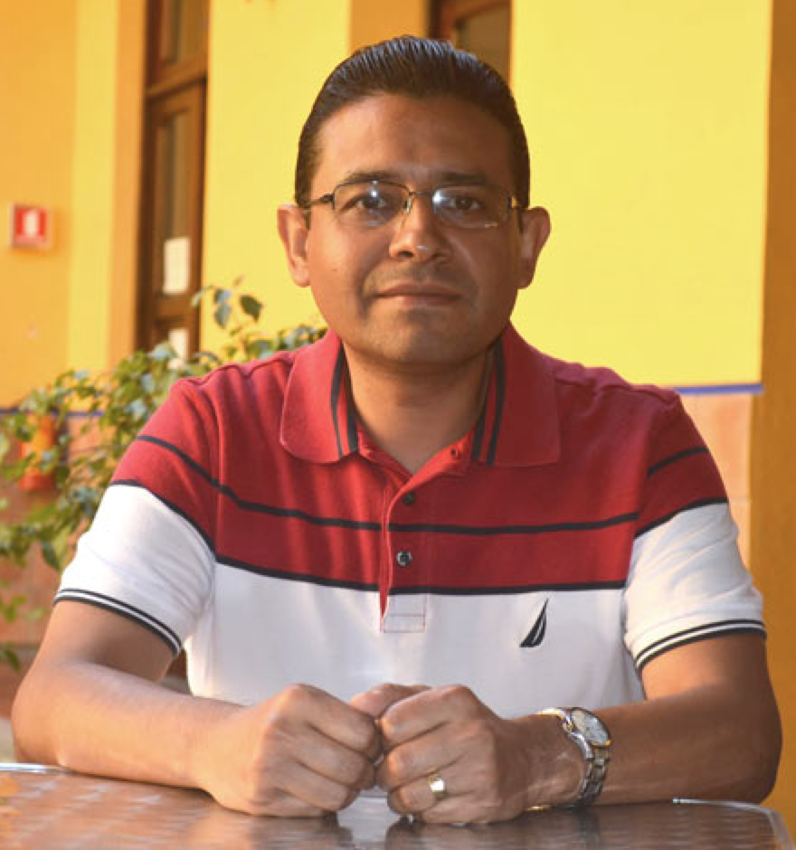

@@include('header.htm')

@@include('blocks/navigation.htm')

@@include('blocks/page-title.htm',{
	"title"		: "Keynote Details",
	"page"		: "Keynote Details"
})

<section class="section single-speaker">
	<div class="container">
		<!--
		<div class="block">
			<div class="row">
				<div class="col-md-12">
					<div class="personal-info">
						<h5><i>Title</i>: Extracting New Science from Data - Challenges and Opportunities</h5>
						<p> <i>Abstract</i>: There has been a very fruitful cross-fertilisation between AI and a variety of scientific disciplines. In this talk I will outline the main challenges, as well as opportunities such truly cross-disciplinary work opens up. In particular, we need a consistent mathematical framework in which to formulate learning in the space of scientific theories, as opposed to learning in the usual data spaces that take the form of finite-dimensional vector spaces, or graph data. A suggestion for such a theoretical framework will be provided, along with examples of its use in cognitive neuroscience, bio-medical sciences and astrophysics.</p>
					</div>
				</div>
			</div>
		</div>
		-->
		<div class="block">
			<div class="row">
				<div class="col-lg-5 col-md-6 align-self-md-center">
					<div class="image-block">
						
					</div>
				</div>
				<div class="col-lg-7 col-md-6 align-self-center">
					<div class="content-block">
						<div class="name">
							<h3>Prof. Efrén Mezura-Montes</h3>
						</div>
						<div class="profession">
							<p>Artificial Intelligence Research Institute at the University of Veracruz, MEXICO</p>
						</div>
						<div class="details">
							<p>
                                Dr. Efrén Mezura-Montes is a full-time researcher with the Artificial Intelligence Research Institute at the University of Veracruz, MEXICO. His research interests are designing, analyzing, and applying bio-inspired algorithms to solve complex optimization problems. He has published over 200 papers in peer-reviewed journals and conferences. He has three edited books and over 12 book chapters published by international publishing companies. From his work, Google Scholar reports over 9,300 citations. 
							</p>
						</div>
					</div>
				</div>
			</div>
			
		</div>
	</div>
</section>

@@include('blocks/footer.htm')

@@include('footer.htm')